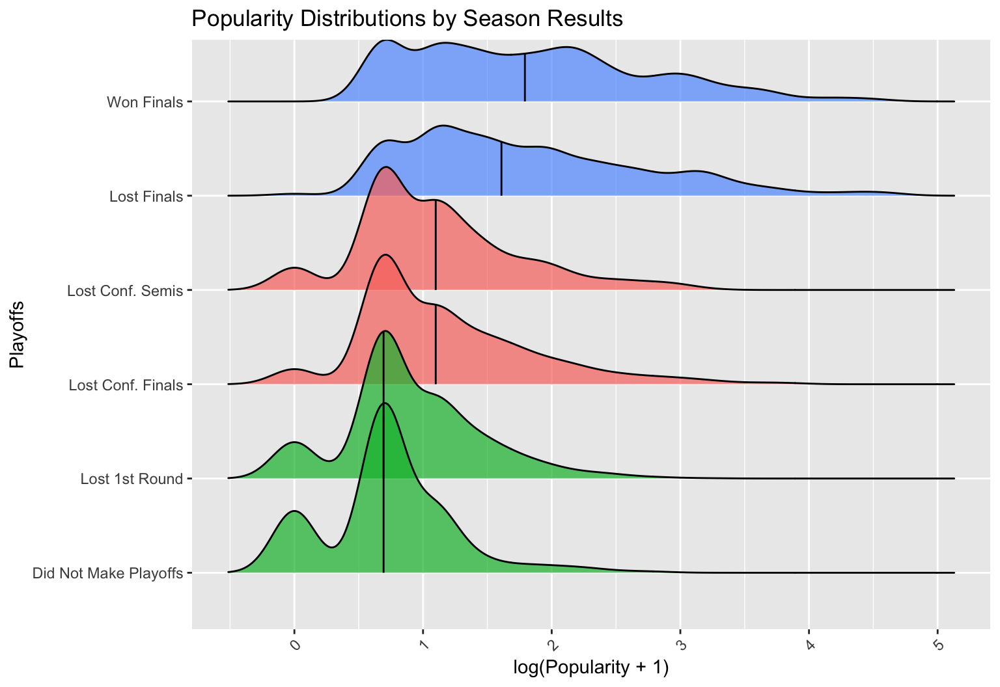
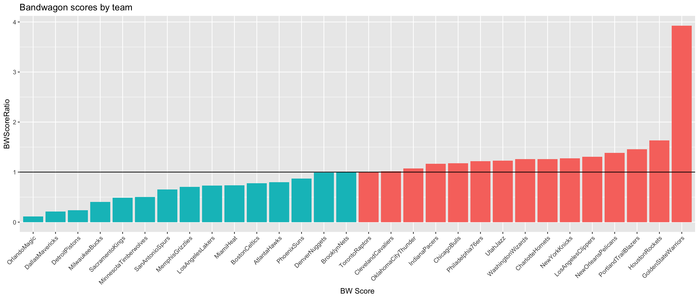

The term “bandwagon fan” is used in sports to describe “a person who takes part in or becomes enthusiastic about something only when it is popular or fashionable” (Miriam-Webster Dictionary). Overall fan support for a team can vary due to several factors, such as population size of the city in which the team plays and success attained by the team. Our goal in this study is to model team popularity in the NBA based on external factors, and to define a bandwagon score based on deviations from model preditions.
Can we measure the “bandwagon” level of a particular NBA team by creating a statistical model to predict popularity, and analyzing the deviations from the model?
To measure popularity of NBA Teams over time, we collected information about search term volume in the United States from Google Trends. Data is available on a monthly basis from 2004 to present.
We measure monthly popularity scores on a relative scale from 1 to 100, compared to an absolute maximum achieved by the term “Golden State Warriors” in June 2016. We also note that the data only includes searches conducted within in the United States.
This dataset contains 182 observations for each of the 30 NBA teams.
We also included data from two other datasets: one containing information related to team performance such as Win/Loss record for the season and how far the team advanced in the playoffs; and one regarding the market size for each city, as measured by Nielsen Ratings.
Our model used multiple regression to predict the monthly Google Trends popularity score for each NBA team. The following predictor variables were found to be significant:
The following plot shows the predicted popularity (red) and true popularity (black) for the Boston Celtics.
We see a yearly cycle throughout the data, with spikes occurring around the start of the NBA season and the beginning of the NBA playoffs and drop-offs in the offseason. The model accurately captures these fluctuations.
The deviations between the observed popularity score and the predicted popularity score from the model can be viewed as the effect of fan behavior.
Our goal is to define bandwagon fanbases to be those that oversupport their team when the team is successful and undersupport when the team is unsuccessful. To this end, we identified three “Success Categories” that teams fall into in a given season:
These categories were derived from a study of the patterns of fan support relative to the level of team success. The plot below shows the three distinct categories across the six possible playoff outcomes.

Our choice of three categories is justifed by an ANOVA test (F = 217, p < 0.001) and subsequent Tukey Honest Signficiant difference tests (p > 0.05 for pairwise comparisons of “Lost 1st Round - Did Not Make Playoffs”, “Lost Conf. Semis - Lost Conf. Finals”, and “Won Finals - Lost Finals”; p < 0.001 otherwise)
The following plot shows the overall bandwagon scores for each of the 30 NBA Teams:

The Golden State Warriors have the highest bandwagon score, while the Orlando Magic, Dallas Mavericks, and Detroit Pistons have the lowest.
First, we define the support ratio for a team in a given year to be:
\[SR = \frac{\text{Mean observed popularity}}{\text{Mean popularity predicted by model}}\]
\(SR > 1\) implies fans supported the team more than the model predicts; \(SR < 1\) suggest fans undersupported their team in that month.
We then define the overall bandwagon score for a team:
\[BW = \frac{SR_{HeavyFavorite} \times SR_{Contender}}{SR_{DarkHorse}}\]
We expect teams with “bandwagon” fans to have popularity above the predicted level when the team is performing well (“Contender” or “Heavy Favorite”), and below the predicted level when the team is not performing well (“Dark Horse”)
\(BW > 1\) indicates bandwagon behavior (higher than predicted support when team is good), while
\(BW < 1\) indicates anti-bandwagon behavior (higher than predicted support when team is not good)
We would also like to apply this research method to other sport leagues within the United States, such as the MLB, the NHL, and the NFL.
Our model did not account for time dependency in the data. A more nuanced model could be fit using an Auto-regressive (AR) approach.
Google Trends (2004). https://trends.google.com/trends/?geo=US
2018 Nielsen DMA Rankings (2018). https://www.nielsen.com/
This poster presentation, as well as costs associated with travel and lodging was supported by the California Polytechnic State University Statistics Department
I would also like to thank Dr. Kelly Bodwin (Cal Poly) for assistance in advising this research project, as well as Eric Tran (Cal Poly) for providing support and input.